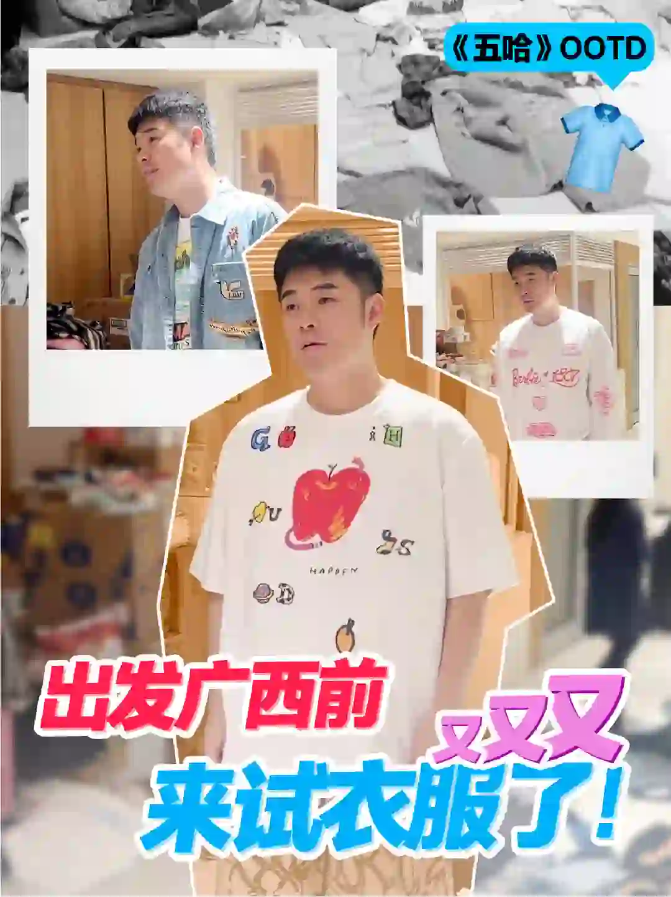
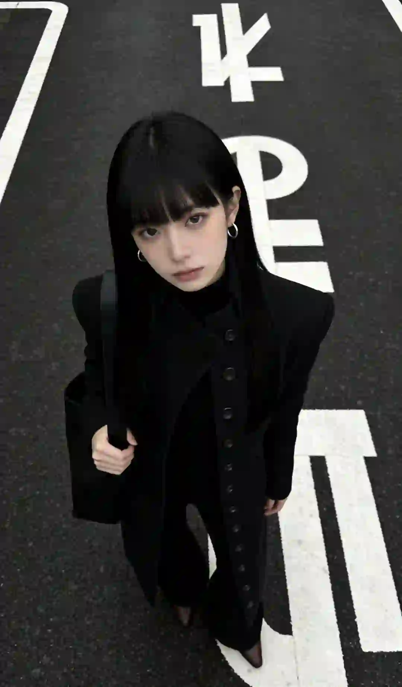
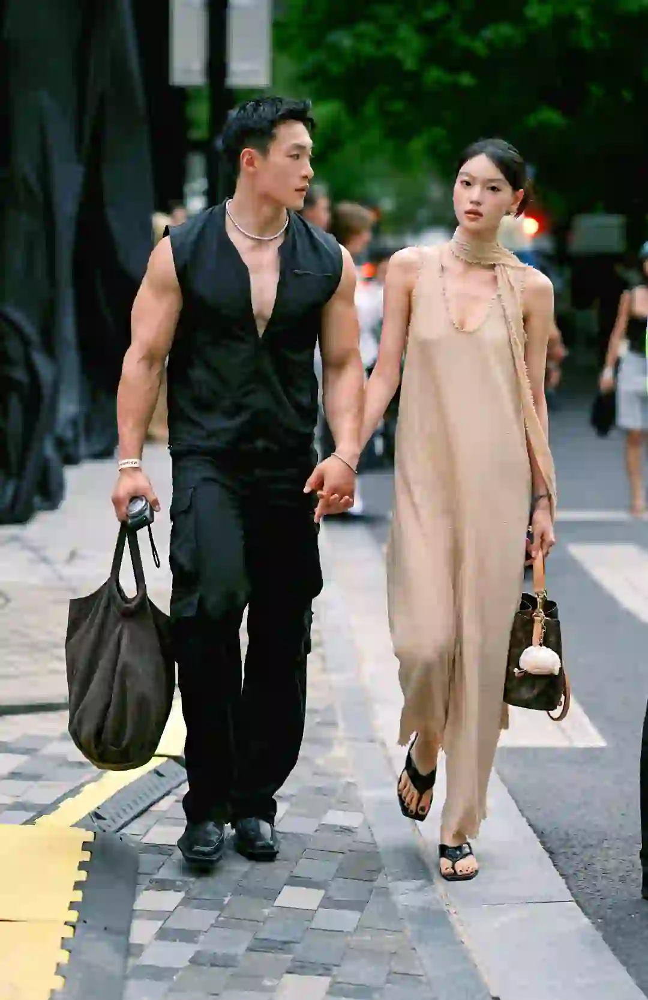
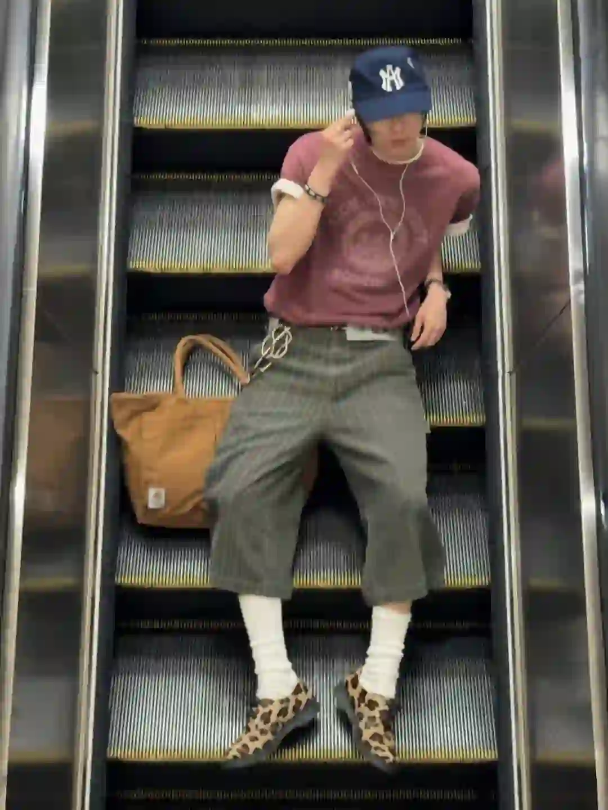
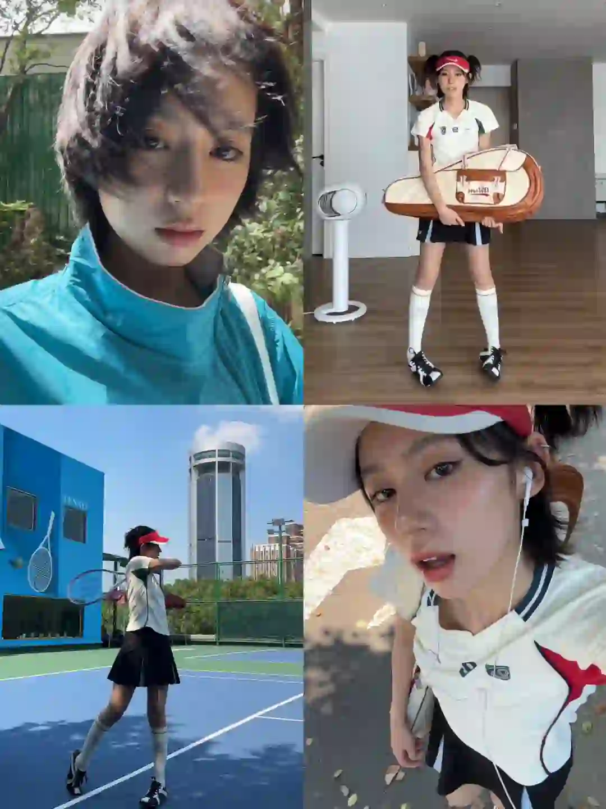

2026年5月15日
05月15日报告
生成时间：2026-05-15 · 范围：时尚 / 穿搭 / 网球
今日参考账号：陈赫 / 姐不伏 / 摄影电焊机
今日高信号标题：时尚这一块 安姐有自己的见解 ｜ 007穿搭 ｜ 我的2025年度街拍18图集锦
竞品策略变化：未命中监控竞品样本
今日高信号标题：时尚这一块 安姐有自己的见解 ｜ 007穿搭 ｜ 我的2025年度街拍18图集锦
竞品策略变化：未命中监控竞品样本

时尚 · 01
时尚这一块 安姐有自己的见解
⭐ 1951
👍 35363
今天可学
- 内容结构：视频封面 + 视频，更像视频示范/单点表达
- 点赞高于收藏，偏流量型曝光内容，不值得原样照抄
- 标签聚焦：#ootd

时尚 · 02
007穿搭
⭐ 2827
👍 14990
今天可学
- 内容结构：人物 + 4图，更像单点表达
- 收藏与点赞较平衡，可学选题包装，但仍需补强可执行细节
- 标签聚焦：#黑色系 / #女孩子酷一点不好吗 / #拽姐穿搭 / #暗黑系

时尚 · 03
我的2025年度街拍18图集锦
⭐ 1531
👍 10253
今天可学
- 内容结构：人物 + 18图，更像资料型合集
- 收藏与点赞较平衡，可学选题包装，但仍需补强可执行细节
- 评论活跃，适合加入观点冲突、对比案例或常见误区来拉讨论
- 标签聚焦：#上海街拍 / #Ootd / #日常穿搭 / #今天穿什么香

时尚 · 04
100位宝藏摄影大师 | jorgemchagas
⭐ 974
👍 4026
今天可学
- 内容结构：人物 + 4图，更像单点表达
- 收藏效率高，说明用户把它当成可复用模板/知识卡，不只是刷到即过
- 评论活跃，适合加入观点冲突、对比案例或常见误区来拉讨论
- 正文入口：英国摄影师📷jorgemchagas jorgemchagas以极简光影与剪影构建城市叙事，车站、街头的孤独身影与建筑线条交织，动态模糊与反射构图传递静谧哲思。 “在流动的瞬间里，…
- 标签聚焦：#拍出电影感 / #一张照片高级感 / #笔记灵感 / #人文扫街

时尚 · 05
每天认识一位摄影师DAY204Helena Georgiou
⭐ 871
👍 2356
今天可学
- 内容结构：文字卡 + 9图，更像资料型合集
- 收藏效率高，说明用户把它当成可复用模板/知识卡，不只是刷到即过
- 评论活跃，适合加入观点冲突、对比案例或常见误区来拉讨论
- 正文入口：📸 Helena Georgiou | 极简光影诗人，用黑白诉说日常的高级感！ 🌫️ 风格解码 1. 极致简约美学 以黑白摄影闻名，剥离色彩干扰，用强烈明暗对比和细腻灰度突出线条与…
- 标签聚焦：#审美提升 / #摄影审美 / #ins摄影师推荐 / #摄影审美累积
时尚赛道今日方法论
- 样本依据：100位宝藏摄影大师 | jorgemchagas / 每天认识一位摄影师DAY204Helena Georgiou
- 当天结构信号：人物封面 + 4图 最强；优先学习样本 2 条，低收藏流量样本 1 条。
- 时尚赛道今天跑出来的是“审美判断 + 资料感整理”：像 每天认识一位摄影师DAY204Helena Georgiou 这类高收藏样本，核心不是讲步骤，而是把趋势、风格线索和案例并排给足，用户才愿意以 37.0% 的收藏率反复回看。
- 执行建议：标题先抛出趋势/风格判断，再给明确收益；正文少讲空泛氛围，多给风格标签、对照案例和可复看的视觉结论，让内容更像灵感资料卡。
- 反例提醒：时尚这一块 安姐有自己的见解 点赞高但收藏低，说明这类曝光型内容能带流量，不适合直接当明日主打法。
今日参考账号：十一筒卷纸 / GAYI今天穿什么 / 查理叔叔
今日高信号标题：用一种很新的方式记录一周outfit📝2.0 ｜ 自带凌乱感的流浪绅士——Alon ｜ 👨🏻40+叔叔｜5套男生穿搭学会蓝色搭卡其色
竞品策略变化：未命中监控竞品样本
今日高信号标题：用一种很新的方式记录一周outfit📝2.0 ｜ 自带凌乱感的流浪绅士——Alon ｜ 👨🏻40+叔叔｜5套男生穿搭学会蓝色搭卡其色
竞品策略变化：未命中监控竞品样本

穿搭 · 01
用一种很新的方式记录一周outfit📝2.0
⭐ 2174
👍 8227
今天可学
- 内容结构：视频封面 + 视频，更像视频示范/单点表达
- 收藏效率高，说明用户把它当成可复用模板/知识卡，不只是刷到即过
- 标签聚焦：#fitcheck / #OOTD / #outfit / #一周穿搭合辑

穿搭 · 02
自带凌乱感的流浪绅士——Alon
⭐ 2573
👍 5604
今天可学
- 内容结构：视频封面 + 视频，更像视频示范/单点表达
- 收藏效率高，说明用户把它当成可复用模板/知识卡，不只是刷到即过
- 正文入口：[扒底酷]系列：第十二期
- 标签聚焦：#ins博主推荐 / #ins博主穿搭 / #顶男创造营 / #男生穿搭

穿搭 · 03
👨🏻40+叔叔｜5套男生穿搭学会蓝色搭卡其色
⭐ 1243
👍 1768
今天可学
- 内容结构：文字卡 + 9图，更像资料型合集
- 收藏效率高，说明用户把它当成可复用模板/知识卡，不只是刷到即过
- 正文入口：蓝色搭配卡其色穿搭教程，会穿真的很简单
- 标签聚焦：#穿搭合集 / #OOTW / #胶囊衣橱 / #男生休闲风穿搭
穿搭 · 04
爹系穿搭｜杂灰针织开衫
⭐ 540
👍 1330
今天可学
- 内容结构：人物 + 4图，更像单点表达
- 收藏效率高，说明用户把它当成可复用模板/知识卡，不只是刷到即过
- 评论活跃，适合加入观点冲突、对比案例或常见误区来拉讨论
- 正文入口：杂灰开衫叠个浅蓝衬衫 领带随便一系就有那味儿了 体面又复古氛围，合适通勤穿搭
- 标签聚焦：#ootd / #复古穿搭 / #通勤风穿搭 / #都市轻熟风
穿搭 · 05
暴走首尔｜OOTD
⭐ 435
👍 1040
今天可学
- 内容结构：人物 + 0图，更像单点表达
- 收藏效率高，说明用户把它当成可复用模板/知识卡，不只是刷到即过
- 评论活跃，适合加入观点冲突、对比案例或常见误区来拉讨论
- 正文入口：（正文为空或未取到）
穿搭赛道今日方法论
- 样本依据：用一种很新的方式记录一周outfit📝2.0 / 自带凌乱感的流浪绅士——Alon
- 当天结构信号：视频封面封面 + 视频 最强；优先学习样本 5 条，低收藏流量样本 0 条。
- 穿搭赛道今天最有效的是“整套可抄作业方案”：高收藏样本 👨🏻40+叔叔｜5套男生穿搭学会蓝色搭卡其色 说明，只要场景清楚、look 数量够多、搭配结果一眼能看懂，就更容易拿到 70.3% 级别的收藏反馈。
- 执行建议：优先做通勤/职业/一周不重样/套装盘点这类清单式内容；封面先给完整上身结果，图组里再拆单品变化和搭配理由，不要只发单套氛围图。
今日参考账号：盖奥 / 网球gogogo / 碳酸饮料拜拜
今日高信号标题：网球正手零基础教学（新手入门） ｜ 网球标准：德约科维奇-正手慢动作分析！ ｜ 当一天夏日运动女孩🎾
竞品策略变化：未命中监控竞品样本
今日高信号标题：网球正手零基础教学（新手入门） ｜ 网球标准：德约科维奇-正手慢动作分析！ ｜ 当一天夏日运动女孩🎾
竞品策略变化：未命中监控竞品样本
网球 · 01
网球正手零基础教学（新手入门）
⭐ 20393
👍 28563
今天可学
- 内容结构：文字卡 + 0图，更像单点表达
- 收藏效率高，说明用户把它当成可复用模板/知识卡，不只是刷到即过
- 正文入口：（正文为空或未取到）

网球 · 02
网球标准：德约科维奇-正手慢动作分析！
⭐ 7406
👍 8305
今天可学
- 内容结构：视频封面 + 视频，更像视频示范/单点表达
- 这条流量带有明显外部加成，只拆内容结构与包装，不原样复制流量来源
- 正文入口：最适合业余选手学习的网球动作~#网球 #网球教学 #德约科维奇 #国庆节 #WTT中国大满贯 #网球中国赛季来了 #上海大师赛 #球类运动日常 #打球 #人生的意义
- 标签聚焦：#网球 / #网球教学 / #德约科维奇 / #国庆节

网球 · 03
当一天夏日运动女孩🎾
⭐ 1387
👍 22291
今天可学
- 内容结构：视频封面 + 视频，更像视频示范/单点表达
- 点赞高于收藏，偏流量型曝光内容，不值得原样照抄
- 正文入口：熬过梅雨天立刻来完成下半年第一个目标 学习打网球🎾 每次运动大出汗后会让我觉得自己又努力度过了一天 👊 但每次运动后的脸部干痒泛红 都让我有点尴尬抬不起头😳 在这种天气做好防晒的同…
- 标签聚焦：#每日穿搭 / #我的运动日常 / #好物分享 / #兰蔻小黑瓶精华
网球 · 04
10条网球裙！裙摆飞起来，打球也起飞
⭐ 3107
👍 5264
今天可学
- 内容结构：未判定 + 0图，更像单点表达
- 收藏效率高，说明用户把它当成可复用模板/知识卡，不只是刷到即过
- 评论活跃，适合加入观点冲突、对比案例或常见误区来拉讨论
- 正文入口：（正文为空或未取到）
网球 · 05
attack tennis 🎾
⭐ 975
👍 4466
今天可学
- 内容结构：未判定 + 0图，更像单点表达
- 收藏效率高，说明用户把它当成可复用模板/知识卡，不只是刷到即过
- 正文入口：（正文为空或未取到）
网球赛道今日方法论
- 样本依据：网球正手零基础教学（新手入门） / 10条网球裙！裙摆飞起来，打球也起飞
- 当天结构信号：视频封面封面 + 0图 最强；优先学习样本 3 条，低收藏流量样本 1 条。
- 网球赛道今天胜出的不是热闹球场感，而是“动作纠错/装备收益/新手可执行”：高收藏样本 网球正手零基础教学（新手入门） 证明，只要用户能马上拿去练，收藏率就能来到 71.4%。
- 执行建议：标题写清动作部位、错误修正或装备收益；内容里给慢动作、步骤和上场场景。明星/赛事样本只借包装，不把热点本身当方法论。
- 反例提醒：当一天夏日运动女孩🎾 点赞高但收藏低，说明这类曝光型内容能带流量，不适合直接当明日主打法。
- 风险提醒：网球标准：德约科维奇-正手慢动作分析！ 已标记为 [不可复制]，只拆结构，不作为明日选题原样跟进。
- 自动抽取规则：仅收录收藏率 >20% 且未被标记为 [不可复制] 的标题模板
- 写入目标：/Users/zhangxiaosong/shared/context/xhs-knowledge/topics/title-templates.md
- 把今天高收藏、高可复制的打法优先塞进明日发帖计划
- 竞品若连续两天从展示型转向教程/资料型，单独开策略变更记录
- 对被标注 [不可复制] 的样本，只拆结构，不抄流量来源